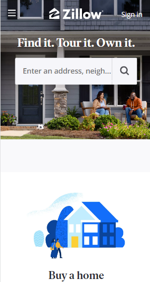

Design Principles Document
Noah Cluff
Hick's Law
Apple
apple.com
Hick's law is so important to keep in mind when building mobile-friendly websites. The law states that less is more when it comes to features and content on a website. For example, instead of having a single web page that has all the content for your entire site, it is best practice to divide your website into multiple web pages with related content.
On a mobile site, this is even more true. It is even alright to remove features on a mobile-sized screen if keeping then would inhibit the user's experience by cramming too many things on such a small screen. Apple does a good job on their home page: there are only 3 things (other than the menu bar) that you can click on, and only 1 main image when you first enter their site. This looks good, and at the same time, the user can do everything they want to whe they normally visit the Apple website: learn more about a new phone, or buy one.
White Space and Clean Design
Zillow
zillow.com It is very important to implement good decision-making skills when you want to use white space in your website. In order to be appealing to the eye, most websites should not fill the entire viewing area with color. White space is the key to getting a professional yet visibly pleasing effect for any of the users of your website. However, there are definitely ways to get too much white space.
When it comes to white space and clean design like Zillow's mobile site, you need to be simple but not too simple. Images and colors should tie into the whitespace that you use. If you do choose to have a lot of white space, but you don't have enough visual content to pair with it, then your site might look too bare. At the same time, if you choose to implement too little white space, the website may be visually detracting and distracting to the site's intended purpose for the user. There is a fine balance, but getting it right will really help produce a clean design.
Rule of Thirds
Amazon
amazon.comThere is a rule called the "Rule of Thirds" that is meant to be a guide of displaying content in order to achieve a pleasing viewing experience for the user. This rule especially applies to websites on the desktop and mobile levels. In order for people to want to engage with your site, you need to follow this rule in order to do so. It will really help!
Amazon's mobile site is a good example of the Rule of Thirds. They really do divide their mobile site into a grid of nine seperate rectangles and place certain content in each of the places that the eye tends to "track", or follow. For example, the eye usually begins in the upper-left portion of the viewing area. Right at these coordinates is the brand logo for another product that is similar to the one on the current page. If you know where people are going to look on your website, it is extremely helpful to know where to place content in order to fulfull the purpose of your site.